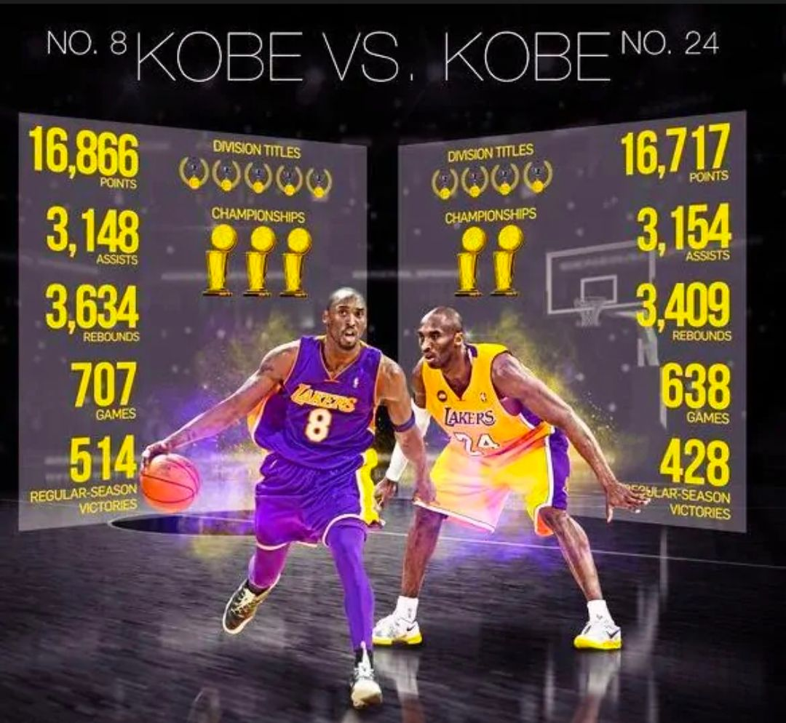

| 主要荣誉 |
|---|
| 整个NBA生涯都效力于洛杉矶湖人队；共获得5次NBA总冠军、1次NBA常规赛MVP、2次NBA总决赛MVP、4次NBA全明星赛MVP、2次NBA赛季得分王；共入选NBA全明星首发阵容18次、NBA最佳阵容15次（其中一阵11次、二阵2次、三阵2次）、NBA最佳防守阵容12次（其中一阵9次、二阵3次）。 2007年，科比首次入选美国国家男子篮球队，后帮助美国队夺得2007年美洲男篮锦标赛金牌、2008年北京奥运会男子篮球金牌以及2012年伦敦奥运会男子篮球金牌。 |
|  |
| 外界争议：肘击风波 |
| 科比以他的技术和坚韧著称，但他从未使用肘击作为主要攻击手段。在激烈的篮球比赛中，身体接触和肘击是难以避免的，但科比通常会选择用实力和技巧来回应对手，而不是采取这种不规范的动作。 |
| 科比的自律和强大实力为他赢得了傲人的成绩和无数的粉丝，也被誉为篮坛C罗！ |